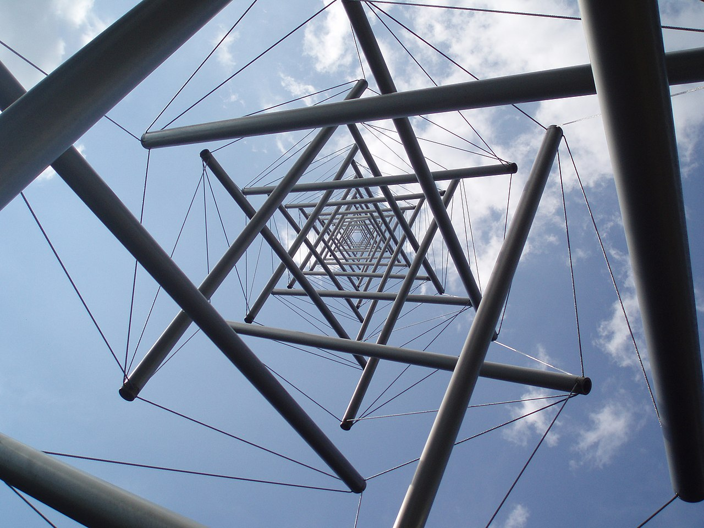

1948 Kenneth Snelson(켄 스넬슨) — Buckminster Fuller의 제자가 tensegrity(tension+integrity)를 빚어냅니다. 막대는 누르고 줄은 당겨서 — 전체가 한 몸으로 버팁니다.
1993 Donald Ingber(도널드 잉버) — 세포도 텐세그리티. 세포골격이 막대처럼 누르고, 미세필라멘트가 줄처럼 당겨 모양을 잡습니다.
사람 몸도 마찬가지 — 뼈(압축)+근육·인대(장력)의 텐세그리티 구조.